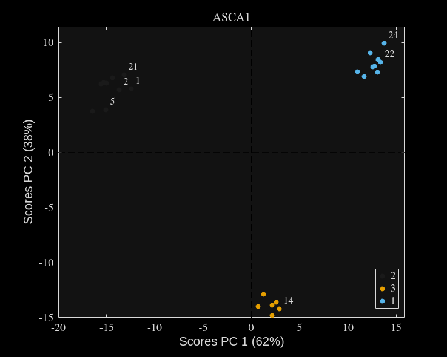
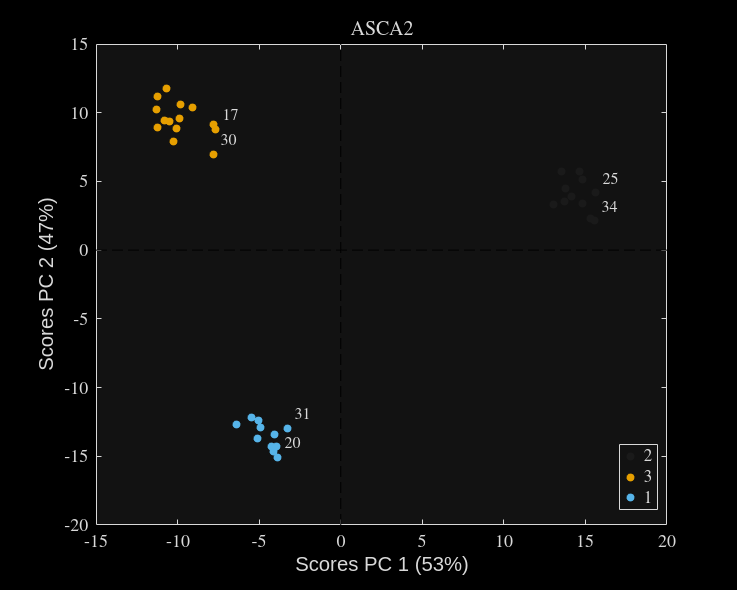

%randn_gra(100,{[1,2,3]},1) reps_pos = 20; vars_pos = 300; % Prepare random effect levels F = createDesign(levels,'Replicates',reps_pos); X = zeros(size(F,1),vars_pos); for ii = 1:length(levels{1}) X(find(F(:,1) == levels{1}(ii)),:) = randn(length(find(F(:,1) == levels{1}(ii))),vars_pos) + nse.*repmat(randn(1,vars_pos),length(find(F(:,1) == levels{1}(ii))),1); end % Shuffle row order rp = randperm(size(X,1)); X = X(rp,:); F = F(rp,:); % Split data into X1, X2 [X1, X2] = blockDiagonalSampling(X, 0.4, 'rows'); F1 = F(1:size(X1,1), :); F2 = F(size(X1,1)+1:end, :); % Fit parglm [~, parglmo1] = parglm(X1, F1, 'Preprocessing', 1); [~, parglmo2] = parglm(X2, F2, 'Preprocessing', 1); ascao1 = asca(parglmo1); ascao2 = asca(parglmo2); scores(ascao1.factors{1},'ObsClass',F1(:,1),'Title','ASCA1') scores(ascao2.factors{1},'ObsClass',F2(:,1),'Title','ASCA2') function [block1, block2] = blockDiagonalSampling(X, p, mode) % blockDiagonalSampling Subsets a block diagonal sampling from a matrix. % REFACTORED AUG 2025 - 'rows' no longer corresponds to an intermediate calculation % to describe the proportion of data to be sampled. This caused a % significant error. % % [block1, block2] = blockDiagonalSampling(X, p, mode) extracts two % rectangular submatrices from the input matrix X according to the % specified sampling percentage p. The parameter 'mode' determines how % the matrix is partitioned: % % 'rows' - Split by rows only: the first block takes the first % round(m*p) rows (all columns), and the second block uses % the remaining rows. % % 'cols' - Split by columns only: the first block takes the first % round(n*p) columns (all rows), and the second block uses % the remaining columns. % % 'both' - Split both rows and columns: the first block is the top % left submatrix with round(m*p) rows and round(n*p) columns, % and the second block is the bottom right submatrix using % the remaining rows and columns. % % Inputs: % X - The input m x n matrix. % p - Sampling percentage (0 < p < 1). E.g., 0.3 means 30%. % mode - A string with options: 'rows', 'cols', or 'both'. % % Outputs: % block1 - The submatrix corresponding to the top left block. % block2 - The submatrix corresponding to the bottom right block. % if nargin < 3 mode = 'both'; % Default mode if not provided. end [m, n] = size(X); switch lower(mode) case 'rows' % Determine number of rows for block 1 r1 = round(m * p); block1 = X(1:r1, :); % Top rows (all columns) block2 = X(r1+1:end, :); % Remaining rows (all columns) case 'cols' % Determine number of columns for block 1 c1 = round(n * p); block1 = X(:, 1:c1); % Left columns (all rows) block2 = X(:, c1+1:end); % Remaining columns (all rows) case 'both' % Determine both rows and columns for block 1 r1 = round(m * p); c1 = round(n * p); block1 = X(1:r1, 1:c1); % Top left block block2 = X(r1+1:end, c1+1:end); % Bottom right block otherwise error('Unknown mode. Please use ''rows'', ''cols'', or ''both''.'); end end
ans =
Figure (3) with properties:
Number: 3
Name: ''
Color: [0.1294 0.1294 0.1294]
Position: [1343 892 1394 840]
Units: 'pixels'
Use GET to show all properties
ans =
Figure (4) with properties:
Number: 4
Name: ''
Color: [0.1294 0.1294 0.1294]
Position: [1343 892 1394 840]
Units: 'pixels'
Use GET to show all properties
 